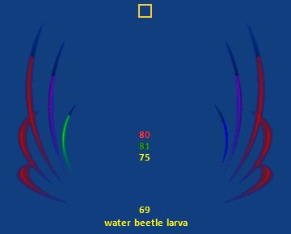
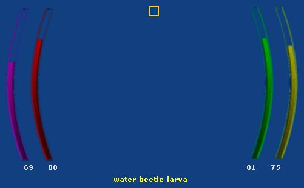
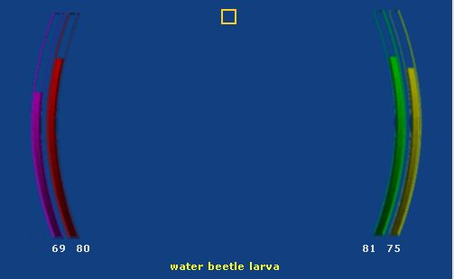

These are the HUD style Summary windows.
Note: To reposition the window or to change the font/window transparency, move your mouse to the middle of the window near the top where the yellow box is shown in the screenshot. A move button will appear when you are over the correct location. Move the mouse cursor so it is hovering over the move button and then click and hold the left mouse button down and drag the window to its new location.
This HUD style was created by Zolen. The player and target health are shown using semi circles around the outside of the window. The player endurance and power are shown using semi circles around the inside of the window.

This style of HUD is from the EggiShohwyn UI. The target and player health are shown using semi circles on the left side of the window. The player endurance and power are shown using semi circles on the right side of the window.

This style of HUD is from the EggiShohwyn UI. The target and player health are shown using semi circles on the left side of the window. The player endurance and power are shown using semi circles on the right side of the window. The status bars are closer together in this style window.
